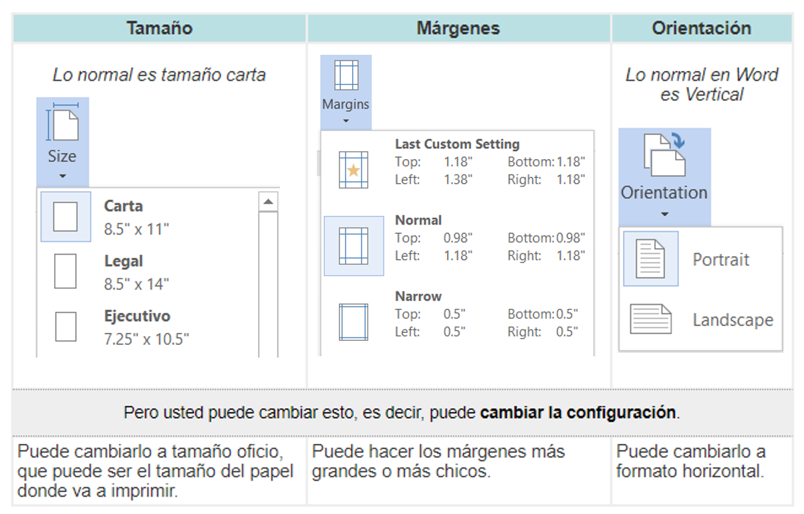
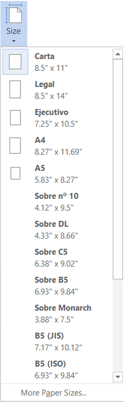

Configuración de Documentos
La configuración de un documento significa definir los tamaños, márgenes y orientación de un documento.
La aplicación define cierto tamaño, orientación y márgenes en todos los documentos.

Existen más opciones de configuración, pero esas se verán dentro de los temas de cada aplicación.
Conozca más acerca de estas importantes funciones:
- Vaya al menú Diseño de Página (Page Layout).
- Seleccione la opción que desea modificar: márgenes, orientación, tamaño.
- Elige una opción:

Al hacer clic en el botón Tamaño (Size), se abre una lista de tamaños predeterminados.
Se puede seleccionar en qué tamaño de papel se va a imprimir nuestro documento.
Los tamaños más comunes son: el Carta (Letter) y el Oficio (Legal). Para seleccionarlo simplemente haga clic en la lista de Tamaño del Papel (Paper Size) y seleccione el tamaño indicado.
Se puede personalizar el tamaño de la hoja, haciendo clic en la opción Más Tamaños de Papel… (More Paper Sizes…).

Al hacer clic en Márgenes (Margins) aparecen unos márgenes predeterminados que se pueden utilizar para agilizar la tarea.
Si ninguno de esos márgenes es correcto para el documento que está realizando, entonces se puede personalizar haciendo clic en la opción Márgenes Personalizados (Custom Margins); aparecerá la pantalla donde se pueden cambiar los valores.

En Word y Excel se pueden cambiar los márgenes superiores, inferiores, y laterales.
En Power Point sólo se pueden cambiar los márgenes de largo y ancho de la pantalla. Para hacerlo, sólo haga clic en las flechas hacia arriba o abajo, para cambiar los valores.
- Superior (Top): indica la distancia entre el borde superior de la página y la primera línea del documento.
- Inferior (Bottom): indica la distancia entre la última línea del documento y el borde inferior de la página.
- Izquierdo (Left): indica la distancia entre el borde izquierdo de la página y el principio de las líneas del documento.
- Derecho (Right): indica la distancia entre el borde derecho de la página y el final de las líneas del documento.
Al hacer clic en Orientación (Orientation) se despliegan las 2 opciones de orientación del documento:
- Vertical (Portrait): el documento está en forma vertical.
- Horizontal (Landscape): el documento puede estar en forma horizontal.